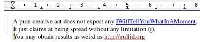
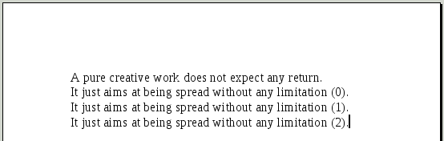
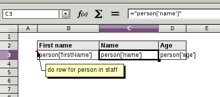
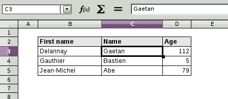

pod (python open document) is a library that allows to easily generate documents whose content is dynamic. The principle is simple: you create an ODF (Open Document Format) text document (with LibreOffice Writer for example), you insert some Python code at some places inside it, and from any program written in Python, you can call pod with, as input, the OpenDocument file and a bunch of Python objects. pod generates another ODF text document (ODT) that contains the desired result. If you prefer to get the result in another format, pod can call LibreOffice in server mode to generate the result in PDF, DOC, RTF or TXT format.
New with Appy 0.8.3: support for spreasheet templates. Appy now allows to generate, from an ODS (Open Document Spreadheet) template, spreadsheets in ODS (natively) or in Excel (by calling LibreOffice in server mode). A first example can be found in the bottom of this page.
First, create a pod template, like the one below.

A pod template is an ODT document where:
In this template, I wrote the Python expression commercial in a conditional field. With LibreOffice, click on [Ctrl]-F2 to create a field. Choose field type 'conditional text', write true as condition, write commercial in the then expression and write nothing in the else expression. Another expression ("i") in the next line has been defined similarly. 2 notes were also added. With LibreOffice, in the Insert menu, choose Note). Click here if you want to learn more about creating pod templates.
Here is the code for calling pod for generating a result in ODT format.
01 from appy.pod.renderer import Renderer
02
03 commercial = 'creative'
04 beingPaidForIt = True
05 renderer = Renderer('SimpleTest.odt', globals(), 'result.odt')
06 renderer.run()
First we need to import class Renderer. Then we define some Python variables. We must then create an instance of the Renderer (line 5), with, as parameters, the name of the pod template (we assume here that the pod template shown above is called SimpleTest.odt and lies in the current folder), a dictionary of named Python objects (here we simply take the global environment) and the name of the result file. The script will generate it, with, as content, what is shown in the image below.

The second line of the template is repeated 3 times. It is the effect of the for loop in the first note. Content of every field was replaced by the result of evaluating it as a Python expression, thanks to the context given to the Renderer as second parameter of its constructor. Note that within a loop, a new name (the iterator variable, i in this case) is added in the context and can be used within the document part that is impacted by the for loop. The last line of the template was not rendered because the condition of the second note evaluated to False.
Click here if you want to learn more about rendering pod templates.
Suppose you write, with LibreOffice Calc, the following template, named SimpleTestOds.ods.

Here is the way we will call pod for producing an ODS spreadsheet, based on some Python dict containing a bunch of people.
01 from appy.pod.renderer import Renderer
02
03 staff = [{'firstName': 'Delannay', 'name': 'Gaetan', 'age': 112},
04 {'firstName': 'Gauthier', 'name': 'Bastien', 'age': 5},
05 {'firstName': 'Jean-Michel', 'name': 'Abe', 'age': 79}]
06
07 renderer = Renderer('SimpleTestOds.ods', globals(), 'result.ods')
08 renderer.run()
If you execute this code in a Python file located in the same folder as SimpleTestOds.ods, you will get a file named result.ods with the following content.

Some remarks now. pod considers that any cell containing something of the form ="..." (= a formula whose result is a string and that is directly expressed as a string literal, surrounded by double quotes) will contain a Python expression, that will be executed according to the current context. pod statements (like the note containing do row for person in staff), allowing to conditionaly or repeatedly include parts of the spreadsheet, are expressed in the same way as in ODT templates (check here for more details).
Within ODT templates, any Python expression is converted to string, because an ODT is only made of text. Within ODS templates, a Python expression that produces a Python int, long or float will be rendered as a float value within the resulting spreadsheet. In the previous example, cells containing pages are float values.
Within an ODS spreadsheet, every sheet is internally represented as a table. With statements like do table for... you should be able to repeat a template sheet and produce several sheets in the resulting spreadsheet.